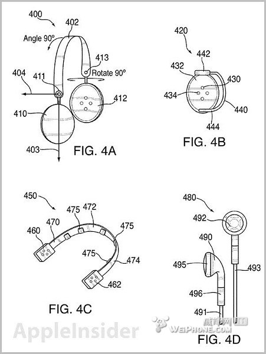
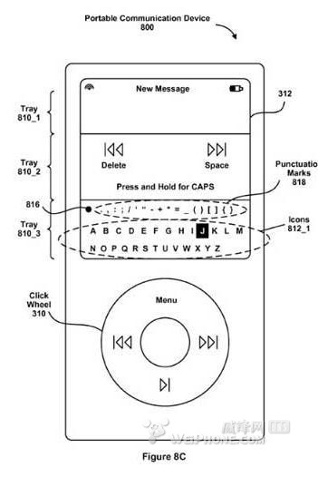

本申请的Flash截图保存方法及系统，由于对图像源保存的是图像的矢量信息，所以设定其宽度和高度是矢量重绘的过程，不会导致图像损失过多像素信息，可以根据项目的需求随意调整尺寸并且清晰度高。
本发明还公开了一种PDF文件到SWF文件转换系统，本发明的PDF文件到SWF文件转换方法及系统，通过对非常规字体的替换及图片化处理，使得PDF文件到SWF文件转换过程中避免了部分文字的缺失以及乱码。
本申请公开了一种电子杂志阅读系统及电子杂志客户端阅读系统，客户端设置缓存模块，在客户端请求阅读服务器上的电子杂志时，依照缓存策略下载选定电子杂志页面内容并缓存在客户端，可以在用户选定页面之前预先在客户端缓存电子杂志页面内容，加快了客户端电子杂志页面内容的加载速度，使客户端用户体验比较好，同时能够在用户跳转的时候抛弃缓存的不再使用的电子杂志页面内容，用于释放缓存占用的存储器空间，节省客户端的存储器空间占用。
本申请公开了一种矢量图展现方法，根据矢量图尺寸及用户设定的缩放值、浏览器尺寸、页面同浏览器之间的间距，自动计算页面目标尺。本申请还公开了一种矢量图展现系统。
本申请的矢量图展现方法及系统，由于没有直接展现矢量图文件，而是根据需求生成相应的位图，这个过程并没有对矢量图文件进行拷贝、更改尺寸等操作，这样如果多处需要使用矢量图文件的话，不必拷贝很多显示对象储存矢量图文件的图像信息，保证了不会占用过多的存储器空间。